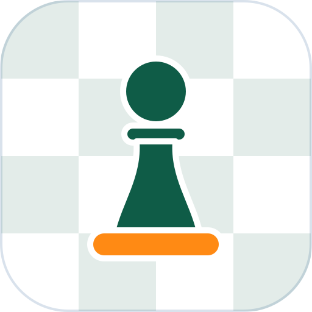

Schach
Der klassische Zweikampf mit allen Regeln.
Brett
So geht's
- Tippe eine Figur an, dann ein markiertes Feld. Punkte zeigen erlaubte Züge, Ringe zeigen, was geschlagen werden kann.
- Alle Regeln gelten: Rochade, „en passant“, Umwandlung, Schach, Matt und Patt.
- Remis gibt es bei Patt, dreimaliger Wiederholung, 50 Zügen ohne Schlag oder zu wenig Material.